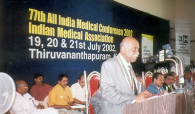
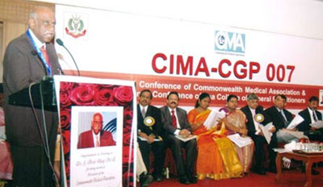
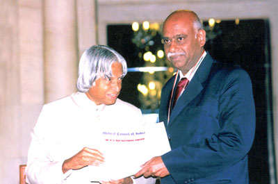
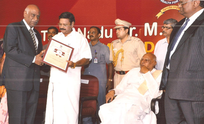

INTERNATIONAL LEADERSHIP
- Sri Lanka – DFM & MD (Family Medicine) conducted jointly by IMA CGP & University of Colombo.
- Malaysia – Overseas branch of IMA started in Kualalumpur.
- FCGP Examination conducted thrice in Kualalmpur
- World Medical Association – Represented India in 2002 at Washington D.C
- Commonwealth medical Association (UK) – Vice President, Central Asia – 2005 – 2007
- Commonwealth medical Association (UK) – President, 2007-2010
- AAPI (USA) – involving in IMA – National RTA Project.
- Efforts are on to form a branch of IMA in Mauritius.
- Efforts are on to form a branch of IMA in Mauritius.
- EHealth – Asia 08 – Conference of CMA organized at Kualalumpur Nov 11-13th 2008.
- Common Wealth Asia symposium on “Health Workers Migration” was Organized at New Delhi 17th to 18th March 2008
- Associate member of World medical Association.
- Founder & Chairman, Commonwealth Medical Association Foundation, UK.
- Chairman – Commonwealth Health Professions Alliance, UK ( First Indian to achieve this honor )
- WONCA – Indian representative, Emergency Medicine Member
NATIONAL LEADERSHIP
- National President IMA 2002-2003.
- Formerly Dean, Chief Patron, IMACGP & IMA eVarsity.
Indian Medical Association
- National President 2020-2021
- Governing Body member – 2008 -2021
- Delivering Guest Lecturer in National conferences
- Contributing Original articles for “Medical Updates” & “Post Graduate Medicine” - Books
- Post graduate teacher over 15 years.
- Formerly Vice President, API, Mumbai.
- Advisor Journal of Association of Physicians of India, JAPI.
ASSOCIATION OF PHYSICIANS OF INDIA, BOMBAY.
CLINICAL RESEARCH
ACHIEVEMENTS
- Involved in Clinical Research - India
- Faculty for Research Methodology International Conference, Bangalore 2008
SOME OF THE RESEARCH STUDIES
- Herbal formulation in Type II DM – Animal and Human Studies.
- Study of Intracardiac masses.
- Bad prognostic marker in AMI
- Lipid profile in AMI
- LV Aneurysm
- H2 Blockers in APD

PRESIDENT COMMONWEALTH MEDICAL ASSOCIATION 2007
First Indian to achieve this honor
.jpg)

NATIONAL PRESIDENT IMA 2002-2003
National president IMA head quarters New Delhi 2002-2003 As IMA National President

HONORARY NATIONAL PROFESSOR OF MEDICINE,IMACGP ,INDIA DR.BC ROY NATIONAL AWARDEE,2000
For his meritorious Service in Socio Medical field, by the President of India.

ACADEMIC EXCELLENCE
Adjunct Professor of Medicine – Dr. MGR Medical University, Chennai Life Time Achievement Award – Dr. MGR Medical University, Chennai Examiner – PGDEM of Georgia Washington University, USA Chief Patron, IMACGP